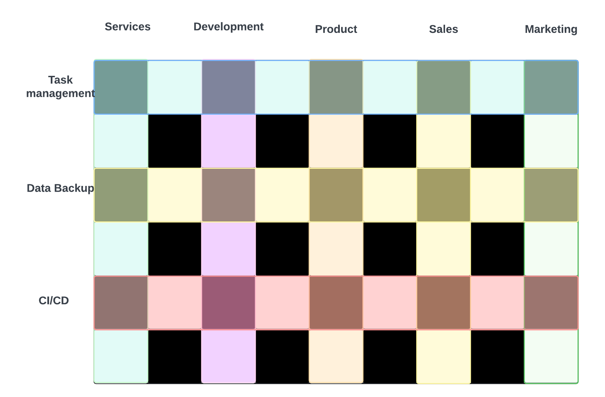

Enter The Mattrix
Here you'll find the updates and the backstories
Sunday, Feb 26. 2023
I needed a week to focus on Product developments.
I've come up with a framework for managing product growth when the product in question is a platform.
A platform entails multiple product offerings under the same umbrella, say code change management, deployment, and testing.
Despite different product offerings, uniformity should still be a priority; often easier said than done when you consider the different company departments apart from engineering that need to coordinate on the message being communicated outwardly.
My solution: Checkerboard Product Management.
What's Checkerboard Product Management?
Think of the departments in your company as the columns: a checkerboard is black square, white square, black square, white square, ...
Think of your product offerings or features as the rows.
Now, together the columns overlay the rows meaning that one department has members responsible for a segment of the feature row, but the department members are ultimately responsible to their department.
So as a feature gets built, each department is interacting in the feature build as a representative of their department and as a contributor to the specific feature.
This ensures vision across the platform as a department that lends itself to uniformity across product features.
Take a look:
Friday, Feb 17. 2023
Web Dev Web Dev Web Dev, SAY IT WITH ME!!
The more things change...
So, python and Django. Very interesting to consider the parallel between Django projects and apps and Salesforce sfdx projects and scratch orgs.
Django is a web framework written with python. Django soups up web development providing pre configured files that become the basis of your web app.
Salesforce sfdx projects create a file structure that mimics a Dev Hub Salesforce org so that new Salesforce scratch orgs can be created that mimic the structure of your Dev Hub org.
Thursday, Feb 16. 2023
Currently under maintenance
Taking a deviation from Salesforce CLI exploration to up my skills on python
...more to come
Wednesday, Feb 8. 2023: Not my day today
Snapshot differences are a finicky feature in the Copado tool.
So what to do?
The idea is to make a comparison between source files of a Salesforce org, git commits, or a combination of those two.
Can this be done with git tooling or sfdx tools? I'll find out.
fix that imagefix the background- nightly deploys
- right hand vertical nav bar (Added Feb 26. 2023)
Tuesday, Feb 7. 2023: A stab at destructive changes
A sub premise to this thread is the value of learning the long way of doing something, because someone else's shortcut might be infested with crocodiles (including my shortcuts–so beware!).
Last night I was tooling around with destructive changes via the command line.
Turns out that the Copado tool generates a package.xml file in its deployments.
With that package.xml file, you might be moments away from turning the package.xml file into a destructive change.
- Connect your devhub org to your machine. ex., sfdx auth:web:login -d -a {hubalias}
- Connect an org you deployed to to your machine. ex., sfdx auth:web:login -a {sandboxalias} -r {https://test.salesforce.com}
- cd into a folder where you want to create the sfdx project
- Run sfdx force:project:create -n {foldernameforproject}
- Within the new folder you just created, create a new folder called, for example, destructiveFiles
- Paste the package.xml file into destructiveFiles
- Take the contents in the package.xml, copy them, and paste them into a new file called destructiveChanges.xml
- Leave only the xml, package, and version tags in the package.xml file. (Delete everything else)
- Run sfdx force:mdapi:deploy -d ./destructiveFiles -u {usernamefortargetorg}
Monday, Feb 6. 2023: Initializing the Mattrix
A Salesforce Development Operations Consultant by trade and by journey, I set out to detail the progressions thus far that have landed me where I am currently.
I'd like to thank educational resources that have made this telling feasible: